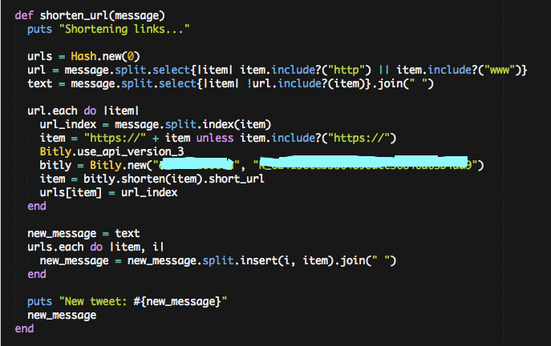

Everyday Build
New MicroBlogger feature: Bitly link shortener
February 18, 2016
Added a feature where the bitly gem automatically shortens any links.
This was a project to add a feature to my MicroBlogger client. It uses the Bitly gem to shorten links automatically by recognizing 'http' and 'www'. Here's the code:

This was its own little challenge. First I had to understand why Bitly.new required two arguments, and after a bit of researching realized those were the API authenticators, so I set up my own. Then, because I'm rusty, I forgot that #select returns an array; I kept having errors because I tried to feed Bitly the urls as an array. Then there was the challenge of having multiple urls in a tweet because I only realized belatedly that this wouldn't support having more than one url in a tweet.
Finally I had a problem when I didn't realize that the gem couldn't recognize a link if it didn't come with 'http' or 'https' in front of it, so I had to fix that.
It took time to work through each bug, but it was all worth it to see the bitly-shortened link popping up in my Twitter feed.